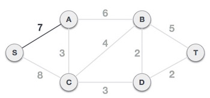

Prim's algorithm to find minimum cost spanning tree (as Kruskal's algorithm) uses greedy approach. Prim's algorithm shares similarity with shortest path first algorithms.
Prim's algorithm, in contrast with Kruskal's algorithm, treats the nodes as a single tree and keeps on adding new nodes to the spanning tree from the given graph.
To contrast with Kruskal's algorithm and to understand Prim's algorithm better, we shall use the same example −


Remove all loops and parallel edges from the given graph. In case of parallel edges, keep the one which has least cost associated and remove all others.

In this case, we choose S node as root node of Prim's spanning tree. This node is arbitrarily chosen so any node can be root node. One may wonder why can any video be a root node, so the answer is, in spanning tree all the nodes of a graph are included and because it is connected then there must be at least one edge which will join it to the rest of the tree.
After choosing root node S, we see that S,A and S,C are two edges with weight 7 and 8 respectively. And we choose S,A edge as it is lesser than the other.
Now, the tree S-7-A is treated as one node and we check for all edges going out from it. We select the one which has the lowest cost and include it in the tree.

After this step, S-7-A-3-C tree is formed. Now we'll again treat is as a node and will check all the edges again and will choose only the least cost edge one. Here in this case C-3-D is the new edge which is less than other edges' cost 8, 6, 4 etc.

After adding node D to the spanning tree, we now have two edges going out of it have same cost, i.e. D-2-T and D-2-B. So we can add either one. But the next step will again yield the edge 2 as the least cost. So here we are showing spanning tree with both edges included.

We may find that the output spanning tree of the same graph using two different algorithm is same.